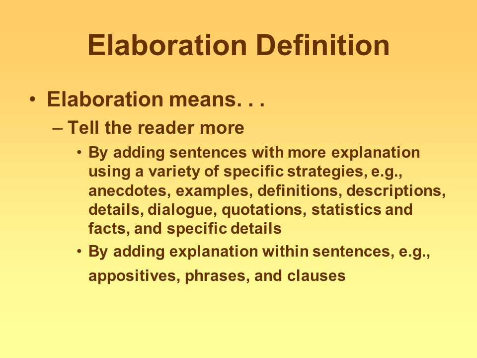

Elaboration is the act of adding more information to existing information to create a more complex, emergent whole. It can be defined as adding details or "expanding on" an idea. It involves developing an idea by incorporating details to amplify the original simple idea.Elaboration is the result of going that extra mile, such as when your history teacher asks for five paragraphs on the Fall of Rome, and you write three pages, or when your friend, instead of giving you a regular birthday card, creates a mini-scrapbook with photos and mementos from the past year.In the law, a bill of particulars is an elaboration of allegations, theories of law, and facts contained in another pleading, such as a complaint, answer, or reply.In mathematics, an iteration is the elaboration of a function.
